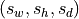
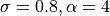
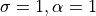
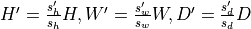
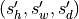
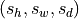

Deep learning for NeuroImaging in Python.
Note
This page is a reference documentation. It only explains the class signature, and not how to use it. Please refer to the gallery for the big picture.
- class nidl.volume.transforms.preprocessing.spatial.Resample(target: float | tuple[float, float, float] = 1.0, interpolation: str = 'linear', **kwargs)[source]¶
Bases:
VolumeTransformResample a 3d volume to a different physical space.
This transformation resamples a 3d (or 4d with channels) volume to a new spacing, effectively changing its shape. It uses a provided RAS-affine matrix to interpret voxel coordinates in physical space. Check Nibabel documentation on image orientation.
Internally, it uses SimpleITK for fast and robust resampling.
It handles
np.ndarrayortorch.Tensoras input and returns a consistent output (same type).Input shape must be
 or
or  .
.- Parameters:
target : float or tuple of floats, default=1
Output spacing  in mm. If only one value
 is specified, then .
is specified, then .interpolation : str in {‘nearest’, ‘linear’, ‘bspline’, ‘cubic’, ‘gaussian’, ‘label_gaussian’, ‘hamming’, ‘cosine’, ‘welch’, ‘lanczos’, ‘blackman’}, default=’linear’
Interpolation techniques available in ITK. linear, the default in nidl for scalar images, offers a good compromise between image quality and speed and is a solid choice for data augmentation during training. Methods such as bspline or lanczos produce high-quality results but are slower and best used during offline preprocessing. nearest is very fast but gives poorer results for scalar images; however, it is the default for label maps, as it preserves categorical values. For a full comparison of interpolation methods, see [R11]. Descriptions of available methods:
nearest: Nearest-neighbor interpolation.
linear: Linear interpolation.
bspline: B-spline of order 3 (cubic).
cubic: Alias for bspline.
gaussian: Gaussian interpolation ().
label_gaussian: Gaussian interpolation for label maps ().
hamming: Hamming-windowed sinc kernel.
cosine: Cosine-windowed sinc kernel.
welch: Welch-windowed sinc kernel.
lanczos: Lanczos-windowed sinc kernel.
blackman: Blackman-windowed sinc kernel.
**kwargs : dict
Keyword arguments given to
nidl.transforms.Transform.
References
Examples
>>> import numpy as np >>> from nidl.volume.transforms.preprocessing.spatial import Resample >>> # Create a dummy 3D image (e.g., shape: (128, 128, 128)) >>> image = np.random.rand(128, 128, 128).astype(np.float32) >>> # Assume identity affine (voxel size 1mm in RAS) >>> affine = np.eye(4) >>> # Instantiate the transform to resample to 2mm isotropic >>> resampler = Resample(target=2.0, interpolation='linear') >>> # Apply the transform >>> resampled = resampler(image, affine) >>> print(resampled.shape) (64, 64, 64) >>> # Works the same with torch.Tensor >>> import torch >>> image_torch = torch.from_numpy(image) >>> resampled_torch = resampler(image_torch, affine)
- apply_transform(data: ndarray | Tensor, affine: ndarray | None = None) ndarray | Tensor[source]¶
Resample the input data.
- Parameters:
data : np.ndarray or torch.Tensor
The input data with shape
or affine : np.ndarray of shape (4, 4) or None, default=None
Affine transformation matrix of the input data in RAS format defining spacing/origin/direction of the input image (in mm). This is typically given by Nibabel in this format. If None, the identity matrix is used, assuming 1mm isotropic input spacing.
- Returns:
data : np.ndarray or torch.Tensor
Resampled data with shape or and same type as input with  where  and  are input and output spacing (in mm) respectively.
- static as_sitk(data: ndarray, affine: ndarray) Image[source]¶
Convert the input data to a SimpleITK image.
Follow us